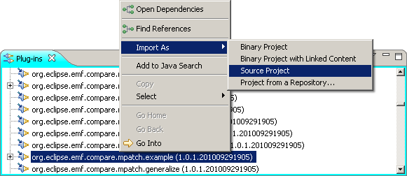
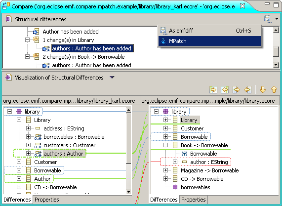

Quick overview of what you learn in the tutorial:
The contents of this tutorial is also shown in the (outdated) screencasts; please note that the screencasts use the old term model-independent differences instead of MPatch.
The tutorial uses a shipped example for illustrations. To import it into your workspace, select Window -> Show View -> Other... -> Plug-ins, and look for the plugin org.eclipse.emf.compare.mpatch.example. Right click it and select Import As -> Source Project.

You should now have a project available in your workspace containing the following files:
model/library.ecore - the base version of a simple library model
model/library_karl.ecore - a modified version of the base version
model/library_eve.ecore - another modified version of the base version
The .ecorediag-files are diagrams for the models. If you installed the Ecore Tools, you should be able to open these files and view the models graphically.
At the moment, MPatches are not created directly, but from existing differences created with EMF Compare. The reason is that we do not want to introduce yet another model-comparison algorithm but instead use existing solutions which are already flexible and exdendable.
To compare library.ecore and library_karl.ecore, select both files, right click and select Compare With -> Each Other. Then a model comparison dialog should open which shows both model and their differences in EMF Compare:

The process of creating MPatches involves a set of optional transformations which add further features as explained below.
There are currently two ways of starting the transformations:
In the end, a wizard for the creation of MPatches is started. Select the library folder as the parent folder and enter karls_diff.mpatch as a file name. Select the transformations 'Intuitive Grouping', 'Scope Expansion', and 'Unbound Symbolic References' on the next wizard page (their order doesn't matter), make sure the Condition-based symbolic reference creator is selected, and press Finish:

The Intuitive Grouping structures the changes in groups. Unbound Symbolic References makes changes not only applicable to one single but to a set of model-elements. Scope Expansion modifies the MPatch such that the changes are applicable to slightly changed models. The condition-based symbolic reference creator produces references which are required by some of the transformations.
Please see this page for more detailed explanations.
Next you should see a summary of the transformation results and you should have a file library/karls_diffs.mpatch in your example project:

Now we are going to apply the just created differences to the other model.
Right-click karls_diff.mpatch and select MPatch -> Apply MPatch. This opens the wizard for MPatch application:


 -- Resolution is ok, the change can be applied.
-- Resolution is ok, the change can be applied.


Now you know the basic steps to use MPatches.